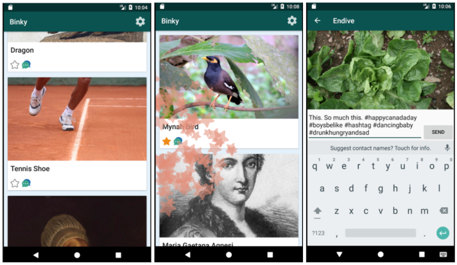
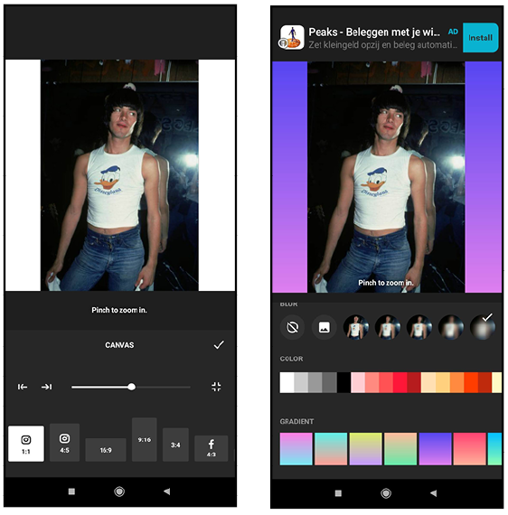

ABSTRACT
The rise of social media puts the concept of individuality in danger. Data mining, unclear privacy laws, algorithms and other tools that manipulate our behaviour, etc. All these dangers are present in the social media behemoth called Instagram.
A growing concern for the individual presence on this platform interlaced with personal responsibility soon clashed with the prospect of creating a profile through which to share my work as a graphic designer. From this arose the concerning question of whether free-will could co-exist in a platform that manipulates its users. And, that being the case, if a graphic designer could exercise free will when creating content for such a platform.
Already in the beginning I had an inclination to say that existentialism and Instagram could never cohabit the same platform. The research I carried out only further confirmed my first impression. My research started with reading multiple sources (papers and books) on the philosophy of existentialism, the visual image that presents itself on Instagram and by those means also the philosophy of the app itself. Following this, I delved into analysing the technical construction of Instagram to understand the physical boundaries it imposed on the content creator. And finally, I researched multiple alternatives of how free-will would manifest itself visually on the app. Be it how it could potentially look from existing examples on Instagram, from small personal sketches or conclusions, as well as examples from artists and other creatives that are anti-Instagram (or just generally anti-social media) platforms.
Personally, it has yet to be proven to me if graphic designers can visually manifest free-will on the app.
INTRODUCTION
After its birth on October 6th, 2010, Instagram is an ever-powerful beast that strives forth and has ultimate reign over all other social media platforms. Through the consistent updates of its interface, it has consequently absorbed other social media networks’ features 1 to turn into a more favourable environment that agrees with a larger audience, resulting in this laid back space in which one can be themselves. In fact, people have welcomed it so much into their life that it has become a ritual for the Instagram user to scroll endlessly through it on particular moments of the day. It is limited, easy to use, with an interface that doesn’t offer too many options but just enough of them that the user doesn’t get lost in the world of possibility. The use of Instagram is addictive and is spiralling rapidly downwards into a pit of psychological issues. And one of these key issues is individuality, the individual self.
The subject of individuality can be addressed rather superficially in reference to this app, criticising it for being a platform for social pressures that result in serious detrimental mental issues. Many have written about this, and still do, especially in the light of the COVID-19 crisis, which turn people away from physical social interaction and instead turn them to digital means, along with the factor of the stay at home policy, and thus remaining at home without external forms of entertainment. 2 3, 4
Yet this isn’t the direct concern of this thesis, the focus is upon the graphic designer interacting with this app, creating content for it.
It is not rare to hear art mentors say “the rules are meant to be broken” to encourage the outpour of creativity from their students. Yet how far can the rules be broken on Instagram, in terms of creating content and visuals? For the sake of individuality, can designers create visuals that challenge and push these boundaries?
And if graphic designers run into the fact that existentialism cannot coexist with Instagram, what then are the alternatives?
THE BASICS
Why the topic of existentialism now? / Where am I positioned in this?
In order to fully comprehend whether or not one can be existentialist in the social media age and in social media itself, a few matters must be addressed. The first would be the relation of the individual identity to existentialism, and
what existentialism itself is. Founded in Paris after the Second World War, existentialism was a response to oppressive regimes and more specifically the trials of Nazi party figures that claimed that they could not be accounted for their
actions, or otherwise tried, because they were merely following orders from superiors. Jean-Paul Sartre, Simone de Beauvoir and other philosophers at the time argued that every human being is what they make of themselves; one is free and
yet
responsible, of one’s own actions and choices. And in turn, all the actions one takes affect all others. It is in these beliefs that existentialism is founded. In relation to the individual, Sartre uses existentialist theory as a means for
a
person to self-reflect. To examine their life for emulation of “bad faith” and to become more aware of oppression and exploitation in the world, as a means to reflect on past events and avoid their recurrence.
5
The awareness of the individual self begins in child development. There are three types of self. The first is the existential self, which comes with a “sense of being separate and distinct from others and the awareness of the constancy of the self” (Bee, 1992).
6
A person, or in Bee’s theory a child realises that they exist as a separate entity to everyone else and continue to exist and live as it, as does everything around them.
The second is the categorical self. This is when a child becomes aware that they exist as an object also in relation to the world. And thus, begin to categorise themselves by different aspects. Aspects that other objects have, such as physical features, as well as, later on, internal psychological traits, comparative evaluations and how others see them. This goes hand in hand with the relational self, which “reflects dyadic bonds or attachments (e.g., romantic liaisons, friendships)” (Sedikides & Brewer, 2002).
7
Meaning that through categorising, they are creating relationships and bonds with other members of society.
The last, and third, is the collective self, that reflects how a person belongs to certain groups of people through similarity and identifies its membership to it.
7
There is a clear relevance to how the first applies to Sartre’s existentialist theory —aside from the term used in its categorisation; it quite forwardly speaks of personal awareness to the surrounding world and the existence of all occurring around one self. However, it does not make one accountable for one’s own actions per se, but purely explains that the subject is fully aware when it comes to positioning themselves in space and time. On the other hand, the categorical self is relating its position to the world. It is like this that a person becomes free as well as responsible; by accepting one’s existence, existing in itself. Their behaviour decides actively what groups they are categorised into, or rather apply themselves to. In this there is a risk, however, that contradicts Sartre’s own theory to some degree. Because, by the ways that they are labelling their person, they are deciding a set of behaviours that will be associated with them upon entering a group.
Then there are those that are blissfully unaware that they are being influenced: if they claim to be free, and see themselves as free regardless, but are influenced by others… Is that self not a free self, and can that self really be held responsible for any actions they do? Who is to determine what “free” is, then? Sartre states that an “individual is free because he escapes from being a form of consciousness”.
8
In the aforementioned case, the person is unaware, unconscious, of their actions being their own. This is also what Sartre himself addresses through the statement in which “no limits to (my) freedom can be found except freedom itself or, if
you prefer, that we are not free to cease being free” (Sartre, 1943). It can be argued that then individuals are not free at all, or perhaps, that they are being forced to make certain choices, be it by their external environmental factors.
Is one not affected by the actions and behaviours of that group in which they are in, in order to remain part of that group? Of course, Sartre claims that one will be held responsible for one’s own actions. And still, the actions of a single member of that group affect everyone else. Additionally, the external judgement of a group of people is also a factor that will influence people to act differently. In his philosophy, Sartre also highlights that part of being existentialist means to continuously reinvent oneself.
6
Hence, we are ever changing. Humans being such responsive and emotional animals, how free of will are they truly? With the new age of algorithms and the over exposition of imagery, information— both factual and fake, censorship, all of
which are fed to the user through LED screens, with all this fanfare of influencing factors, how free is a social media user then?
Carl Jung (1935) addresses this coming together of the conscious and unconsciousness of a person, through individuation theory. The personal and collective integrate into a single person, in self-realisation, and through this process of individuation a person becomes whole. To be above the influences and actions of a collective, then the subject would have to pass through the process of individuation that Jung discusses in his psychology-based theory. It is in this manner that a person would be fully aware of the external factors that have an effect on them, aware of the possibilities and restrictions of their actions,to which they can then be held responsible for, as Sartre states in existentialism that they should be.
It would be easy to dismiss existentialism as a past dilemma, related to war crimes and far away moral conflicts. A heated political climate: extremism rising, the digital proving to be capable of not only manipulating us into buying certain items but also manipulating our political decisions, and the crisis of COVID-19… All these social circumstances have one conclusive thought, which is that our choices matter and our free-will is precious. Our actions define and affect those around us more than ever before, as arguably the individual in the Western world has never had as much power as they do now. Add to this our possibility to be informed is enforced by the Internet and multiple search engines.
The coming together of individuals on social media platforms has proven this. In 2018, a simple tweet from singer Rihanna shaming Snapchat for mocking her assault experience resulted in a ripple carried by her followers. It tore into the app’s stock and sent plummeting 800 million dollars.
9
It is no secret now that on a daily basis we all ignore the lack of privacy we have on Instagram, how we have openly agreed to sell our lives and soul to the untouchable Mark Zuckerberg and his minions who sell our data without our well
informed consent to the highest bidder. How we let ourselves be manipulated, continuously. It is normalised to such a degree that despite this awareness we continue to submit to using their products (Instagram, WhatsApp, Facebook and
Messenger). We are cattle in the big market of profitable personal data, the new gold.
In history class, we talk in retrospect about the manipulation techniques the Nazis used, with their propaganda and their social appeal to a starving, suffering population. In psychology class, we look into the different experiments carried out in reflection to the Nuremberg trials, such as that of the Milgram experiment, to psycho-analyse the “how” of manipulation. In philosophy class, we argue what it means to be an individual. We feel anger, we feel disgust, shock, we discuss and sometimes argue as we inevitably reflect.
The bell rings.
The hallways overflow with students. Routinely, they pull out their phone and click the abstracted white camera with its warm toned gradient. And like that, all we have learnt has served for no purpose. We open up a door for history to repeat itself.
For a moment, let’s hypothesize and make a few statements that at a later point can be confirmed or disproved, or perhaps new ones may arise all together. The possibilities are open. An existentialist graphic designer would be acting on free-will when posting on Instagram. This expands beyond the ideas of just freely posting whatever one wants whenever they want, expressing then and there their ideas.
There are two ways that I can foresee the graphic designer being an existentialist on Instagram. The first is in the visual form of their content, that pushes the boundaries of Instagram and rejects the construction and philosophy of it. The second is the information transmitted across their work, signalling to users that one cannot be free whilst using Instagram, or at least not on the platform itself.
The other answers to this question of the existentialist designer on Instagram abandon the idea of the two subjects overlapping at all; it is the belief that a person who acts on free-will cannot exist on Instagram, that their individuality is crushed all together.
Now, here I am. Staring at my multicoloured screen, with the app open. My photos, fit to the technical details of Instagram, my identity refrained there to fit this grid. Hours spent on YouTube, watching as Mark Zuckerberg is repeatedly butchered by lawmakers, in America, in Europe, who outline his invasive manipulate systems within Facebook and Instagram, the damage these platforms cause to mental health, etc. Equally, I have seen multiple headlines over the years screaming out about the loss of individuality, the million manipulation techniques, all damage Instagram has caused —and causes— to the creative field,
10,
11
and here I am, still holding my phone in my hand. Well aware that all the images I post I lose ownership to, knowing that my microphone and camera have been turned on thousands of times to spy on me, and that at times my
habits on the app have been obsessive and addictive. Disgusted, furious at times… and yet I still have room to be conflicted about clicking both “delete account” and “uninstall”.
To be on Instagram is to be present in society, because the vast majority of the population is on the app itself. Really; the structure of it is so simple, so basic, that even your grandparents could find their way around it without much complication. And they do! For graphic designers, along with other creatives, it is the ideal place to showcase their work. Many get job offers through here or are discovered by clients and studios. Even bigger older studios, brought to fame prior to the social media age, now have accounts on the app to be followed closely through. Their presence is enforced by Instagram.
As a young designer, about to step out into the professional world, I often find myself debating what to do. Up to this point, I have had a personal account which I kept on “private” mode, granting only access to my closest friends, family and classmates. Months pass between post and post, and now the periods for which I don’t post extend more and more. My stories have become a rare sighting, and often they are to share memes or posts of other users. Two hundred and nine followers which I could easily filter down to fifteen or so that I actually would like following my content, and from those fifteen I only share my actual life with potentially six, excluding my two siblings and the ghost account of my mother. All that sharing occurs outside of Instagram itself anyhow. I never cared to use Instagram to prove my worth or what I am doing, nor to display my work or creative processes. The last straw to sway me from posting my work online was the spill on the copyright of images on Instagram, and how the platform was free to use any of my images and video as they pleased. Ultimately, my usage of the app is to bookmark—or in insta-terms “save”—others’ work and inspiration, and the occasional video of a soft animal.
The doubts that surface often rotate around whether my presence would be diminished without Instagram and if I would miss out on opportunities without the platform. On one hand, I see myself wanting nothing more to do with Facebook and its subproducts. And on the other, the only exception in which I could see myself ignoring all previous knowledge I have of Instagram and remaining on the platform for professional use would be in the instance that I find a way to post creative content that still allows for my individual expression. With this research I hope to find the answer to this annually lingering question that will guide me forwards to take the decisive steps to quit or submit to Instagram as a graphic designer; if it is possible for my visual work to co-exist within Instagram or if the construction of it annuls it.
The Philosophy of Instagram
The focus of this chapter is on the philosophical way in which Instagram functions as a social media platform.
The Czech philosopher Vilém Flusser wrote about the changing technical image in the 1980s in his book “Into the Universe of Technical Images”.He defines technical images as being primarily photographs, as well as digital images on screens, monitors, projections including holograms. These images are not created by a manual process or manual machinery and are therefore not physical. This process of creating them, this process of visualisation is consequently automated.
For him, these technical images first come in during the early developments of the photograph, that we can say is then the late 1800s, which is when, focused on Western society, the image becomes of greater value than the written word. Prior to this, the written word held a high importance as it helps us date history, and prior to that period is the “prehistoric” in which rock and wood mainly is used to create images that communicate greater meanings, based on spoken word. The technical image relies on text to be fully explained and contextualised. According to Flusser, because images replace text, we see ourselves and the world around us as images are: two-dimensional, dependent on context, scene.
The construction of these digital images is also key to understanding Instagram; they are then made up of pixels and coding. Flusser describes this as being “concretizations”, that is to say “calculations and computations” of abstract particles. Therefore, they are only a visualisation, an illusion. It is the image of a house, not a house itself. As René Magritte reminds us “ceci n’est pas une pipe”.
Throughout the text, Flusser warns us about the danger of these images, as they are created through automatised processes. One can argue that a photographer adjusts the settings on their camera to make the image appear as they wish, which is a manual task, but the actual shutter speed, the lighting, down to the actual root of it, is made automatic by the camera. The machinery of the camera does it itself, with a photographer’s aid, but as Flusser declares it is not comparable to wood carving, for example. From there stems his argument in that people are becoming lazier in terms of thinking, as they do not have to put thought and consideration into what they do, in comparison to the previous age of writing. A writer plans the order of their words, the meaning, the tone, revises them. A person making a digital image, according to him, simply snaps the photo. It is within our interest to consider Flusser’s reflection as a tool to analyse our perception of the images on Instagram.
Now let us consider all this philosophy in the context of Instagram. Firstly, the user is seeing visualisations of the world around them. These are not the real world, these are a perspective, filtered and edited view of the world. To add to this that now images are edited in apps, created using artificial intelligence, these images, these illusions are even further distorted from reality. They are barely a conception of it.
Secondly, these illusions render to nothingness. It is a decaying set of pixels, and we are aware that this image is not real, that it is composed of RGB dots. Therefore, Instagram creates a whole world, a whole dependency on the void of nothingness. The internet is fragile, apps are fragile, dependent on factors such as the resolution quality of devices, satellite connection and electricity, which at times could and does fail. Jaron Lanier outlines that the way social media platforms were created was by mimicking gambling machines; there is a set of actions a user must do and for those they get instant gratification. These, like gambling, create dependencies, they create addictions even if they do not appear so at first. So much so that gambling sites now come to learn from social media how to better their tools. Combining these two concepts, Instagram is a platform that encourages users, people, to become addicted to nothingness. A world where, as Flusser says, the idea of true and false does not exist, but rather evaluates the world based on concreteness and abstractness. It is between fiction and reality, and sometimes it is both. And it is used every day for people to record and base their lives around. We, users of Instagram, are living on nothing.
A platform which rotates around the technical image —the production, consumption and handling of these images—is a no-thinking headspace, according to Flusser. These automated processes do not encourage deep thought, or calculation, and therefore what we create is purely thoughtless, superficial illusions of our world.
The community aspect of Instagram means that there is a constant social interaction going on. This process of production of content is divided into those that create the content (images and video) and those that “consume” this content. Be it by saving this content (in an archiving sense) or by providing feedback through likes, shares and comments. This is part of that Instagram philosophy, in which the user gives feedback to the account that creates material. And regarding this aspect, graphic designers thrive.
It is this instant feedback system which provides rating directly to the designer. The success of a work can be judged on numbers; likes, shares, follows. Their success is directly quantifiable. It is also an important means through which socialisation takes place on an international level. Since Instagram has become such a social media behemoth, many millions of users are present online. It facilitates the interaction of knowing somebody from the other side of the world without having to have the means by which to travel there and become directly acquainted with people within that social circle first hand. It is a social shortcut in many ways. People can interact, collaborate and discuss. Which has massive appeal to graphic designers, for it provides opportunities of finding creatives to produce the best outcomes in a collaboration, for example, without the reliance and limitation of only those that you know face to face.
Additionally, it is an instant filter. Immediately, from a profile preview one can see the quality of work and judge it (particularly in the graphic design field, which is about transmitting messages visually) and have the creator readily accessible. There is no intermediary to have to approach, but directly the designer themselves.
Algorithms also play a big role in the interactivity element. The infamous algorithm will show the user related accounts based on certain similarities by cross comparing with other accounts: common followers, common likes, same use of certain hashtags. And in this manner, it does a level of networking that would otherwise require socially interacting
However, one cannot ignore that the construction of Instagram represents its philosophy. Whilst it provides a level of interactivity, of feedback between the viewer and the account, it is very limited. There are many more platforms and forums that allow the sending of screenshots or images in the comment section, to back up an argument. Or allow the simple function of referencing back to previous messages from the same discussion whilst still replying to the original poster (the main account, in this case). Even on a simpler basis, these platforms allow hyperlinks to be sent in a comment and allow them to be clicked, whilst Instagram sends it just as text and thus kills the whole purpose of a hyperlink. These all are factors that enrich the discussion and qualify as feedback.
With this said, it is obvious that the philosophy of Instagram is to have a limited level of social interaction. Human beings rely on social interaction, being social and emotional animals, and Instagram supplies just barely that whilst embracing the idea of ego and the monologue. For graphic designers seeking a conversation, seeking actual feedback, this is not the ideal platform for it. It is instead the ideal place to go window shopping. The viewer can see, like a portfolio, a sample of the graphic designer’s work and if curiosity is peaked, then they will take the step further of approaching and engaging in conversation. And because Instagram is so limited in its interaction, oftentimes the conversation is taken outside of the platform itself.
In fact, the latest Instagram update that took place in November 2020 clearly establishes the direction the app is taking. On the bottom toolbar of the app, there used to be five central icons. From left to right: “home” which showed the feed, “search” which let users navigate the search feed and specifically search hashtags or accounts, “post” which users clicked when they wanted to post an image or video, “activity” which showed the comments, likes, followers and other information directly connected to the user, and finally the personal profile icon which takes the user to their own profile. In the update, the central icon for posting content was replaced with the IGTV reels icon. The next icon left of it which showed the activity of the user was replaced with a shopping bag, showing the user items they can buy from all the accounts that they follow. The “post” and “activity” icons were moved instead to the top of the feed.

Since the philosophy clearly translates through the user interface of the app, it is pretty clear what this means; the personal existence of the user has become secondary to the consumption of content. The icons on the bottom, most
accessible, now all rotate around the idea of consumption be it by watching, finding or buying. The user’s presence is secondary now: by putting those two icons in the top right corner, they are automatically harder to access
anatomically for a human being. Our thumbs don’t reach all the way up there on the screen, it requires an extra effort for us to click these.
Additionally, it is an instant filter. Immediately, from a profile preview one can see the quality of work and judge it (particularly in the graphic design field, which is about transmitting messages visually) and have the creator readily accessible. There is no intermediary to have to approach, but directly the designer themselves.
Algorithms also play a big role in the interactivity element. The infamous algorithm will show the user related accounts based on certain similarities by cross comparing with other accounts: common followers, common likes, same use of certain hashtags. And in this manner, it does a level of networking that would otherwise require socially interacting
However, one cannot ignore that the construction of Instagram represents its philosophy. Whilst it provides a level of interactivity, of feedback between the viewer and the account, it is very limited. There are many more platforms and forums that allow the sending of screenshots or images in the comment section, to back up an argument. Or allow the simple function of referencing back to previous messages from the same discussion whilst still replying to the original poster (the main account, in this case). Even on a simpler basis, these platforms allow hyperlinks to be sent in a comment and allow them to be clicked, whilst Instagram sends it just as text and thus kills the whole purpose of a hyperlink. These all are factors that enrich the discussion and qualify as feedback.
With this said, it is obvious that the philosophy of Instagram is to have a limited level of social interaction. Human beings rely on social interaction, being social and emotional animals, and Instagram supplies just barely that whilst embracing the idea of ego and the monologue. For graphic designers seeking a conversation, seeking actual feedback, this is not the ideal platform for it. It is instead the ideal place to go window shopping. The viewer can see, like a portfolio, a sample of the graphic designer’s work and if curiosity is peaked, then they will take the step further of approaching and engaging in conversation. And because Instagram is so limited in its interaction, oftentimes the conversation is taken outside of the platform itself.
In fact, the latest Instagram update that took place in November 2020 clearly establishes the direction the app is taking. On the bottom toolbar of the app, there used to be five central icons. From left to right: “home” which showed the feed, “search” which let users navigate the search feed and specifically search hashtags or accounts, “post” which users clicked when they wanted to post an image or video, “activity” which showed the comments, likes, followers and other information directly connected to the user, and finally the personal profile icon which takes the user to their own profile. In the update, the central icon for posting content was replaced with the IGTV reels icon. The next icon left of it which showed the activity of the user was replaced with a shopping bag, showing the user items they can buy from all the accounts that they follow. The “post” and “activity” icons were moved instead to the top of the feed.
So much for being a “social” media platform.
The more people use this social media, the more the philosophy of it becomes part of our world. Jaron Lanier, amongst other philosophers and former social media creators continue to outline how it is changing how we socially interact. Our addictions to these gambling machine carbon copies result in abnormal behaviour, outlined by Jaron Lanier in “Ten Arguments for Deleting Your Social Media Accounts Right Now”.
For creatives to stay on this platform means the death of creativity and imaginative processes themselves if we take these previous arguments into consideration. As graphic designers, we strive to design future change. This future change doesn’t begin simply in the identities or other projects we create, it begins at the heart of the matter which is shaping society. To nurture these sites by creating content for them means to feed this monster. Of course, there is the counter argument of social connectivity, although limited, that this app provides. The aspect of exposure, easy access to people of multiple audiences. Yet, surely this is not the only means to achieve this.
The Answer to the Pending Question: to Stay or to Leave?
There is a tree of answers to respond to this question, and surely I cannot address all of them, but here I outline a few.
Ideally, by this point I should have highlighted why, as a graphic designer, or let alone an individual, it is important to be existentialist and consider our presence on Instagram rather strongly. Without going into moral arguments, about legal implications, about mental health, all of which are broadly discussed every passing year Instagram continues to thrive. The Social Dilemma, Hypernormalisation, Jaron Lanier, Cal Newport, Your Undivided Attention; endless and endless articles online, documentaries, books, TED talks, informed by former experts in the field of social media development, can tell you tirelessly about the aforementioned themes.
The first question is on being an existentialist. One can choose to not be existentialist, to let themselves be dragged by the tide. To which one can only wonder if self-fulfillment is achieved, if one becomes just a puppet of the world, or if it is even possible to not be a slightest bit existentialist.
Then one can choose to be existentialist, to take hold of the reigns of their life and question their actions. Though it is a more strenuous path, I find this to be more freeing and to impose on us a level of personal awareness. The harder road does become easier with time. To stay on Instagram, by one’s own will, is a form of practicing it. And so is not posting content that challenges the Instagram layouts or questions our presence on the app.
To Stay
Let’s assume one opts to stay on Instagram. There is the option of actively acting against the platform whilst on it, or else, to be passive.
To stay and act against it, then. There are a few examples I have gathered that clearly challenge the trends or any reasoning of the app, as a preparation to gather more visuals at a later point and gradually create my own as part of my final graduation project. The connection I now wish to find is these visual manifestations in relation to graphic design specifically.

The other option that presents itself to us upon staying on Instagram by our own free-will is to be passive. Simply adhere to the rules, posting our graphic design work on there and other content that is re-formatted to fit in the limitations. In such a case, I see this as using Instagram like a shop window. The account is an archive of material linked to the graphic designer posting it, easily accessible. In such a case—which is currently the way many graphic designers use Instagram—many of original posters then redirect people to external links on their profiles to find out more. The common pattern then is to use Instagram as an addition to an existing website.
To Leave
In considering our presence, some of us may opt to leave. And what then are our options upon leaving? Immediately many of us will be scrambling to look for alternatives that provide similar services. Or perhaps there is a need for a
platform that is for and made by graphic designers, something that represents us more closely.
Alternatives
Due to the many scandals of Instagram, multiple blogs online outline alternative apps or platforms that cover the similar services like those that Instagram does. Here I list a few of those which I have gathered online. Some are aimed
at graphic designers and creatives, whilst others are more generally resembling the app in question.
Behance
This social media network is owned by Adobe, and is used by people who primarily use the Adobe Creative Cloud applications. Here you can find a diverse group of members from different creative fields. To aid your visual search, Adobe has set up filters based on programs used, specialization (illustration, photography, …) alongside the use of a keyword search engine.Dribbble
Similar to Behance, this platform promotes creatives and their work. Whilst Behance is more widely open to whomever wishes to join, Dribbble is more aimed at designers and curated. Memberships allow one to expand their level of self promotion on the network.Vero
Regarded as a positive version of Instagram, when first launched Vero promised to remain free of using advertisements, algorithms, or data mining. In all other aspects, it is very similar to Instagram, whilst tackling the app’s major flaws. On Vero, one can share more than just images and videos: books, movies, music, locations, tv-shows, even links.500px
Similar to Instagram, this app relies on interest-based algorithms to determine the content on your newsfeed. It is focused around the art of photography, and many celebrate it for its lack of influencers or advertisements. This platform is available both on mobile and pc.
As for creating our own platform, Dutch artist Harm van den Dorpel addressed this in his website “delinear.info”. In this work, he criticises the use of censoring and carefully calculated algorithms on social media networks, as well as the linearity in which information is presented to us on a feed. Here, van den Dorpel challenges networks such as Instagram and makes his own rules, enforces his free-will and his own ideas of what is a normal means by which to receive information. This platform allows the user to create associations over time rather than being presented with the newest content, which pushes the user to think further and examine the content presented to them.
A similar project is that of “Active Archives”/ “http://activearchives.org/wiki/Main_Page”, by Michael Murtaugh. Although not specifically a social media platform, it is a website that gathers different media from multiple archives
and compiles them in a non-linear manner, actively establishing a protest against once more the linearity of our websites and platforms.
Another curious example of an anti social media app is “Binky”. Created in 2017 by Dan Kurtz, this app mimics Instagram’s interactivity behaviours and satisfies the craving of being on social media. However, all the content is auto-generated, none of it is real. Comments disappear, posts cease to exist, removing all consideration of digital permanence. The whole experience is a pixelated illusion: there is no network, no socialisation.
15

In creating a platform in which graphic designers can express their free-will, the most simple solution is providing the freedom of choice. When one does this, the possibilities a designer has to express themselves with are limitless. Of course, in social media platforms endless possibilities do not exist: without some consistent templates and structures, the application or site would have no identity, aside from being an overly confusing and inaccessible place. In most platforms, creativity and that endless freedom is not priority. Instead it is about being innovative and refreshing within the tight-knit restrictions.
Concluding thoughts: Would Sartre own an Instagram account?
The topic of existentialism and how it is practiced is a complex and extremely subjective one. One can act following trends, doing as they are told by others, and still this can be argued as the person acting on their own free-will if they declare so. Even a person who claims to be existentialist could be influenced severely by sociocultural factors to such a degree that they may think that they are existentialist, when in reality they are not. ‘Can individuals then ever be fully existentialist’ has both a yes and a no answer. Graphic designers as people, part-taking in society, are not an exception to the statement.
A graphic designer can manifest free-will whilst creating visual content for Instagram. How this free-will is displayed is a different subject all together. The most important thing to note is that they can only manifest their free-will within the physical constrictions of ratios and file sizes of the platform, along with other technical details such as where and how they can post content. It can manifest simply by following the rules of the app, or it can manifest with the content challenging and actively criticising the platform. It can manifest as both of these together.
From a personal perspective, after all this research in addition to information on how social media affects our behaviours, our mindsets, how it brainwashes us, it seems to me that graphic designers should not try to address whether they are or are not being conscious of their actions on the platform, but if they should be on it all.
Though providing one singular, non-lengthy explanation of what graphic design is becomes nearly impossible, to me it has always been about problem solving through creative processes. The current problem in our society is that social media is changing the limits of our freedom through various manipulation techniques, as well as the invasion of privacy and data mining. Instagram is appealing to graphic designers by marketing itself as a world of opportunities to express ourselves in, but it is killing expressiveness and individuality in the process.
Certainly, there are counter arguments. The aspect of social interaction is brutally necessary as proven by these—as we all like to say—uncertain and unprecedented times. It has facilitated voices that have not been heard before to now scream loud, and it has connected individuals, raised awareness. Yes, it is the perfect podium from which users can spout out lengthy monologues and hear back their echo. For graphic designers and other creatives, it is a means to be accessible by and contact clients or colleagues for collaborations. It has opened a world of exposure… enabled by algorithms. These same algorithms have killed a freedom of choice, have rigged elections, and have driven a titan of superficial mirages that twist the way we see reality.
Let us turn to philosophers. To answer the title of this chapter: Would Sartre have an Instagram account? Keen curiosity to understand human behaviour drives philosophers to explore and observe the world, so yes, I think Sartre would have an account as a means of research at least. Whether he would use it to manifest his existentialist self and how long it would last him is a mystery left unsolved. Or whether he would leave at all. For a moment, let’s hypothesise the scenario. If he stayed, his existentialist vein would prevent him from submitting to the imposed rules and restrictions, and it is likely he would post content that manifests against it. On the other hand, if he left, he would likely turn to creating some alternative that is highly personalised to maximise his free-will. Although, he would most definitely not leave Instagram until he had analysed it down to the smallest detail, leaving no stone left unturned.
To this, Vilém Flusser would argue that we can remain on the platform and criticise it, from which no change will come. Whilst Jaron Lanier actively pushes us to criticise it also, but simultaneously leave social media for good, from which he claims change will come.
It is not my intent to tell the individual what to do and to shame them for what they otherwise choose if it disagrees with me. It is to provoke some thought, some questions. And to keep in mind that nothing is forever, that one can leave Instagram and always return at a later point. There is no clear answer as to what to do next ...yet. This “yet” is what is to come, it is the future, which is shaped by no other than the individual and their independent actions that will ripple on.
Let’s get technical: structural analysis, technical details, and user interface
In order to understand how we can push the limits of the social media network we must know the limits themselves. This is the perhaps less inviting, less thrilling section of user interface analysis and the long listing of technical details, such as resolution, video and image sizes, etc that ultimately set boundaries of the graphic designer to create within. And so, here I take the voice of the technician, analytical and precise.
What happens in the scenario that my image/video is wider or longer than the ratios listed above? For posts, Instagram will crop the image to fit the ratio that is closest to the size of your image/video. On stories, one can pinch and rescale and turn videos and images to fit more freely. It is important to note that Instagram does not stretch content only in height or width, it simply crops it to fit a ratio.
Is there a way to post images/videos with a different ratio than what is mentioned above? The closest one can get to posting any content that is not following the ratios above is by creating a border. Multiple apps provide this possibility, most of them found in the Appstore/Play Store/any other equivalent store app through which to download apps, under the search term “no crop” tools. Examples of these include the android available apps “No Crop Pic for Instagram”, focused on images specifically, or “Inshot” that allows editing of both images and video.

Alternatively, a designer could use programs available to them through Adobe or other image creating programs to create these borders and/or crop the image.
Images can also be cropped to
a.) produce multiple posts out of one image, that when side by side on the layout of a profile create one larger image
b.) produce what are known as seamless “carousels”.
On February 22nd, 2017 a new feature was added which allowed users to upload multiple images within one post. It allows a maximum of ten photos and or video, in the ratio of the first image selected. This means all following images will be cropped to fit the size of the first.
To see these photos, one swipes through the gallery format. This feature inspired people to explore the idea of a photo continuing onto the next image slot in the gallery, composing longer images out of smaller cropped images. Originally, the gallery itself was called a “carousel” but now many designers and users simply relate the term “carousel” to these longer, seamless composite image. The lack of margin between a photo and another photo in the gallery of a post led to these becoming seamless.
As seen above, when swiping between images in the gallery of the post itself, it will appear as though the image is continuous due to elements connecting the two.
This seamless continuity is not possible with multiple videos, as a video only begins to play when said video is in full view in the gallery.
Above one can see a screenshot of swiping between the first and second video in a post of three total, an intermediate spot: the first video continues to play until the second is in full view. When the second begins to play, the first stops playing. Because of this, carousels with videos are not possible as they would not play simultaneously. However, carousels which are a combination of video and image are possible, though they are not used often. It is more so a background colour or other visual elements that tie these two together as a “carousel”, or continuous image.
In terms of pixel sizes, anything larger than the above-mentioned sizes Instagram will compress. In this process of compressing, parts of the file are being grouped together or removed.
13
Therefore, details will be lost or distorted. The same happens with an image smaller than 320px, which is the minimum upload size; Instagram will try to scale it up to fit the margins and the image will therefore appear pixelated or distorted.
The choice of image format is between .png or .jpg. The maximum file size is 30MB.
More on the moving image
A little more information is required on videos, outlining further technicalities.
A video in a post: The formats one can upload to Instagram are .MP4 and .mov, with a maximum file size of 4GB. A minimum length of 3 seconds is required, and it can stretch to a maximum of 60 seconds.
A video in IGTV: The format is .MP4, with a minimum of 30 FPS (frames per second) and a resolution of 720 pixels at minimum. It must be a minimum of a minute long, whilst the maximum is 15 minutes when uploaded through a mobile device and 60 minutes when uploaded through a web browser. The file size itself is a minimum of 650MB and a maximum of 3.6GB.
Lay it all out
In this following section of layout, multiple ways in which uploaded posts are presented will be discussed. The idea is that all layout options can be presented as something to consider in the content the designer is creating, and how it displays.
The single post layout in a profile and a feed are the same, as one post appears in full view. The only difference is that within a feed, the user can scroll onto the next post which might be of the same account or a different account, all based on technicalities such as the algorithm or the time of upload. In a profile of a specific account, however, in single-post view they will be able to scroll onto the next post of this same account.
In a specific profile, the viewer sees a maximum of three columns by four full rows of pictures, with the fifth row cut off. This is after they have scrolled down from the profile information, after which the username of said profile remains sticky at the top. The images in preview appear in a square ration (1:1). When clicked, they appear in their perspective ratio within the post.
Within a profile, a user can click and hold a post to view it in its original ratio. In this mode, the user cannot view past the first image in the scenario that the post they clicked and held contains multiple photos.
The importance of knowing the technicalities
Though this seems like a tediously long chapter with not much to do with anything, in order to unravel the problem one has to understand all aspects of it. As mentioned in the previous section, Sartre outlines that as living beings in a society, a community, we are influenced by sociocultural factors around us which determine our existentialism.
The trends of communication are in fact one of these factors and so the app itself is a variable we must consider. The physical limitations of the image ratios, for example, stop us from acting upon our free-will when our free-will consists of wanting to post an image which is a ratio of 1:15, forcing us to either crop it down or to put a canvas/frame around it. Here, the argument of how far we are able to enact our free-will is restrained by the digital boundaries.
Bibliography
- Bee, Helen L. (1992). The developing child. London: HarperCollins.
- Blairf@rivaliq.com. “The Impact of Coronavirus on Social Media Engagement for Brands.” Rival IQ, 4 June 2020, www.rivaliq.com/blog/coronavirus-on-social-media-engagement-for-brands/.
- Bogost, Ian. “The App That Does Nothing.” The Atlantic, Atlantic Media Company, 9 June 2017, www.theatlantic.com/technology/archive/2017/06/the-app-that-does-nothing/529764/.
- Clement, J. “Topic: Coronavirus: Impact on Online Usage in the U.S.” Statista, www.statista.com/topics/6241/coronavirus-impact-on-online-usage-in-the-us/.
- Curtis, Adam, director. HyperNormalisation. BBC, 2016.
- Flusser, V., Poster, M., & Roth, N. A. (2011). Into the universe of technical images. Minneapolis: University of Minnesota Press.
- Flynn, T. (2011, December 5). Jean-Paul Sartre. Retrieved from https://plato.stanford.edu/entries/sartre/
- Horsfield, Molly. “Instagram Is Destroying Our Individuality.” Student Comment and News, 12 June 2018, scan.lancastersu.co.uk/2018/06/16/instagram-is-destroying-our-individuality/.
- Instagram Help Center. (n.d.). Retrieved from https://help.instagram.com/381435875695118/?helpref=hc_fnav
- Lanier, J. (2019). Ten arguments for deleting your social media accounts right now. New York: Picador, Henry Holt and Company.
- Leguichard, Stephanie. “Instagram Is Destroying Your Mental Health.” Medium, Invisible Illness, 17 Aug. 2020, medium.com/invisible-illness/instagram-is-destroying-your-mental-health-fc7ee0ac17e5.
- Mark Dalton. (2017, October 30). Do You Own The Content You Post To Instagram? Should You Watermark It? Retrieved from https://medium.com/mark-dalton-photography/do-you-own-the-content-you-post-to-instagram-should-you-watermark-it-889f51c7f8f3
- Marketing, MikMak. “How Instagram Stories Have Evolved as a Result of COVID-19.” MikMak.tv, www.mikmak.com/blog/how-instagram-stories-have-evolved-as-a-result-of-covid-19.
- On Sartre and his existentialist theory; the origins of it and the details of it.
- Orlowski, Jeff, director. The Social Dilemma, Exposure Labs, Netflix, 2020, www.netflix.com/nl-en/title/81254224.
- Sedikides, Constantine & Brewer, M.B. (January 2002). Individual, relational and collective self: partners, opponents, or strangers?
- Stefansky, E. (2018, March 19). Snapchat Lost $800 Million After Rihanna Criticized Its Offensive Ad. Retrieved from https://www.vanityfair.com/style/2018/03/rihanna-chris-brown-snapchat-ad
- Wagner, K. (2018, August 08). 'Stories' was Instagram's smartest move yet. Retrieved December 09, 2020, from https://www.vox.com/2018/8/8/17641256/instagram-stories-kevin-systrom-facebook-snapchat
- What Is Image Compression? - KeyCDN Support. (n.d.). Retrieved from https://www.keycdn.com/support/what-is-image-compression
- “Dissociative Social Media.” Rhizome, rhizome.org/editorial/2015/dec/14/deli-near-info/.
- “The Impact of Instagram on Creatives - a Reflection with Personal Tips by 11 Creatives.” The Design Trust, 28 Mar. 2019, www.thedesigntrust.co.uk/impact-of-instagram-on-creatives/.
Image References
- Jillwrren. “Instagram Image Size & Dimensions for 2021 (+ Free Infographic!).” Later Blog, 9 Dec. 2020, later.com/blog/instagram-image-size/.
- Personal screenshot, from the app “Inshot”
- Personal screenshot, from the app “Inshot”
- Personal screenshot of the account @michiel_schuurman on Instagram
- Personal screenshot of the account @wecouldgrowup2gether on Instagram
- Zimmerman, Danielle, et al. “Big Instagram Update Lets You Upload Multiple Photos to Single Post.” Hypable, 23 Feb. 2017, www.hypable.com/instagram-multiple-images-single-post/.
- Personal screenshot of the account @pablodelcan on Instagram
- Personal drawing, done by me
- Personal screenshot of the account @ohnotypeco on Instagram
- Personal screenshot of the account @ohnotypeco on Instagram
- Personal drawing, done by me
- Personal screenshots of the Instagram app
- Personal screenshot of the account @breadfaceblog on Instagram
- Personal screenshot of the account @meatwreck on Instagram
- Personal screenshot of the account @pocket.novels on Instagram
- Personal screenshot of the account @mr.handsup on Instagram
- Personal screenshot of the account @yasserkit9 on Instagram
- Personal screenshot of the account @avocado_ibuprofen on Instagram
- Personal sketches/drawings of hypothetical visual explorations on being existentialist and critical whilst on Instagram, done by me.
- Personal screenshot of my own feed, my own post
- Personal screenshot of a post by account @ratnajeet_wadile on Instagram
- Personal screenshot of the social media platform “delinear.info”.
- Personal screenshot of the social media platform “Active Archives”/ “http://activearchives.org/wiki/Main_Page”.
- “Binky - Satisfy Your Phone Cravings - Apps on Google Play.” Google, Google, play.google.com/store/apps/details?id=com.binkonomics.binky.
-
In this article, VOX explains how Instagram took aspects such as the “stories” feature created by Snapchat. This was the major selling point of Snapchat as an app.
https://www.vox.com/2018/8/8/17641256/instagram-stories-kevin-systrom-facebook-snapchat
↩
-
https://www.rivaliq.com/blog/coronavirus-on-social-media-engagement-for-brands/
↩
-
https://www.mikmak.com/blog/how-instagram-stories-have-evolved-as-a-result-of-covid-19
↩
-
https://www.statista.com/topics/6241/coronavirus-impact-on-online-usage-in-the-us/
↩
-
Flynn, T. (2011, December 5). Jean-Paul Sartre. Retrieved from
https://plato.stanford.edu/entries/sartre/
↩
-
On Sartre and his existentialist theory; the origins of it and the details of it.
↩
-
Bee, Helen L. (1992). The developing child. London: HarperCollins.
↩
-
Sedikides, Constantine & Brewer, M.B. (January 2002). “Individual, relational and collective self: partners, opponents, or strangers?”
↩
-
Stefansky, E. (2018, March 19). Snapchat Lost $800 Million After Rihanna Criticized Its Offensive Ad. Retrieved from https://www.vanityfair.com/style/2018/03/rihanna-chris-brown-snapchat-ad
↩
-
https://scan.lancastersu.co.uk/2018/06/16/instagram-is-destroying-our-individuality/
↩
-
https://medium.com/invisible-illness/instagram-is-destroying-your-mental-health-fc7ee0ac17e5
↩
-
Mark Dalton. (2017, October 30). Do You Own The Content You Post To Instagram? Should You Watermark It? Retrieved from
https://medium.com/mark-dalton-photography/do-you-own-the-content-you-post-to-instagram-should-you-watermark-it-889f51c7f8f3
↩
-
What Is Image Compression? - KeyCDN Support. (n.d.). Retrieved from
https://www.keycdn.com/support/what-is-image-compression
↩
-
Instagram Help Center. (n.d.). Retrieved from
https://help.instagram.com/381435875695118/?helpref=hc_fnav
↩
-
Bogost, Ian. “The App That Does Nothing.” The Atlantic, Atlantic Media Company, 9 June 2017,
https://www.theatlantic.com/technology/archive/2017/06/the-app-that-does-nothing/529764/
↩
-
Bogost, Ian. “The App That Does Nothing.” The Atlantic, Atlantic Media Company, 9 June 2017,
https://www.theatlantic.com/technology/archive/2017/06/the-app-that-does-nothing/529764/
↩
By Adriana Navarro Villacampa
3170721@kabk.nl
a.navarrovillacampa@gmail.com